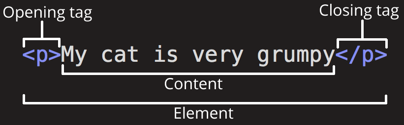

1
1. Internet#
- Internet: infrastructure
- Web: service
- router(路由器)
- Internet Service Provider (ISP)
-
IP address(IP: Internet Protocol)
192.168.2.10
-
domain name
2. web page, website, web server, and search engine#
| library | a web server |
|---|---|
| sections (science, math, history, etc.) | websites |
| books | webpages |
| search index | search engine |
3. web server#
-
An HTTP server:
a piece of software that understands URLs (web addresses) and HTTP (the protocol your browser uses to view webpages).
-
A static web server
as-is: 原样
a computer (hardware) with an HTTP server (software)
-
A dynamic web server
a static web server plus extra software, most commonly an application server and a database
-
request
- respond
4. set up (设置) a local testing server#
- URL localhost:8000
5. Dealing with files#
-
writing your folder and file names
- lowercase
- no spaces
- dashes
6. HTML basics (基础)#
-
HTML (Hypertext Markup Language)
is the code that is used to structure a web page and its content.
not a programming language; it is a markup language
-
HTML consists of a series of elements (元素)
wrap different parts of the content

-
Attributes (属性)
- a space (空格)
- attribute name =
- "attribute value"
Simple attribute values that don't contain ASCII whitespace
(or any of the characters " ' ` = < > ) can remain unquoted

-
Nesting elements (嵌套元素)
You can put elements inside other elements
-
empty elements (空元素)
have no content
- <img>
-
example
-
<html>
wraps all the content on the entire page
root element
-
<head>
don't show
- keywords and a page description that you want to appear in search results,
- CSS to style our content,
- character set declarations and more.
-
<title>
This sets the title of your page
in the browser tab
bookmark/favourite
-
<body>
show
-
-
<img>
-
alt(alternative)
-
specify "descriptive text" for users who cannot see the image
- visually impaired (视觉障碍)
- Something has gone wrong
-
-
-
Marking up text (标记文本)
-
essential HTML elements (基本元素)
-
Headings (标题)
<h1> - <h6>
-
Paragraphs (段落)
<p>
-
Lists (列表)
always consist of at least 2 elements.
The most common list types:
- ordered lists: <ol>
- unordered lists: <ul>
list item: <li>
-
Links (链接)
<a>: anchor
- href: hypertext reference
-
7. CSS basics (基础)#
-
CSS (Cascading Style Sheets): 层叠样式表
the code that styles web content
not a programming language, not a markup language either.
CSS is a style sheet language
-
CSS ruleset(规则集)
The whole structure is called a ruleset. (referred-to as just rule)
- Selector: HTML element name
- Declaration: a single rule

-
Different types of selectors (不同类型的选择器)
- 常用选择器
Selector name Example Element selector (type selector) p ID selector #my-id(FF: [id=xxx]) Class selector .my-class Attribute selector img[src] Pseudo-class selector a:hover Pseudo-class selector: The specified element(s), but only when in the specified state. (For example, when a cursor hovers over a link.)
-
Fonts and text (字体和文本)
-
Since <html> is the parent element of the whole page, all elements inside it inherit the same font-size and font-family.
-
/* */: comment
-
-
CSS: all about boxes
-
CSS layout is mostly based on the box model
CSS 布局主要就是基于盒模型的
-
Each box's properties:
-
padding (内边距)
the space around the content
-
border (边框)
the solid line that is just outside the padding
-
margin (外边距)
the space around the outside of the border

-
width (of an element).
-
background-color
the color behind an element's content and padding.
-
color
the color of an element's content (usually text).
-
text-shadow
sets a drop shadow on the text inside an element.
-
display
sets the display mode of an element.
-
-